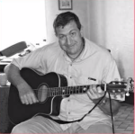

CURRICULUM VITAE

SCHIARATURA Ludovic
36, rue d'hesdin
62190 LIERES
Tel: 06 59 25 04 37
castellastro@gmail.com>
EXPERIENCES PROFESSIONNELLES
Rabot Dutilleul Construction
-Décembre 1991 à aujourd'hui Dépanneur de grues à tour dans un premier temps puis,
actuellement
en poste de gestion de suivi du matériel soumis à contrôles périodiques réglementaires.
Par ex: installations provisoires de chantier, topographie, extincteurs et harnais.
Gestion du matériel électroportatif (environ 2500 machines) ainsi que 35 photocopieurs
Je me suis occupé de la gestion du parc automobile également pendant sensiblement 4 ans. Parc de
120 véhicules environ avec pour une petite partie de la location courte durée.
-Mars 1004 à Mai 2015 Gestion des apparaux de levage, des extincteurs, des visites
chantiers
pour audit bases vies provisoires de chantier.
Transmanche Link
-Novembre 1987 à Novembre 1991Technicien de maintenance sur centrale
de retraitement des boues d'excavation et machines de retournement de draisines
Technicien de maintenance sur les 3 tunneliers japonais reliants la gare de coquelle
au puit de Sangattes ainsi que la la station de pompage du PK7
Bouygues construction
-Avril 1987 à Octobre 1987 Technicien de maintenance sur centrales à béton de production de
voussoirs (centrale et pompe à béton)
Technicien de maintenance sur lanceur de voussoirs sur piles en mer.
Norpac
-Mars 1986 à Mars 1987 Maintenance electrique et mécanique sur le métro de LILLE Ligne 1
Service militaire
-Février 1985 à Janvier 1986 Maintenance sur tourelle de char AMX30 et permis poids lourd
Artois Béton
-Juin 1983 à Janvier 1985 Mécanicien poids lourds, semie remorques et toupies de béton
Montage et maintenance de centrales à béton (assistance)
DIPLOMES ET FORMATIONS
-1983 C.A.P et B.E.P électromécanique, lycée Technique Salvador
Allende.
-1995 Formation à la mise en place et la gestion d'aides à
la conduite de grues à tour (automate de contrôle).
-2009 BAC PRO maintenance indstrielle obtenu via une VAE
en candidat libre.
-2017 Formation anglais via "le comptoir des langues".
-2018 Formation à l'utilisation du logiciel de gestion de matériel EMAT
AUTODIDACTE
Apprentissage de la suite office, libre office, OS Ubuntu, Traitement images (GIMP),
Studio enregistrement, traitement son (ARDOUR), informatique en général.

cliquez pour agrandir
LOISIRS
Pratique de la guitare, auteur compositeur.
Auteur de nouvelles, romans, texte de chansons.
Equitation, informatique, astronomie, lecture, voyages.
Interêt pour la blockchain et les cryptos monnaies.